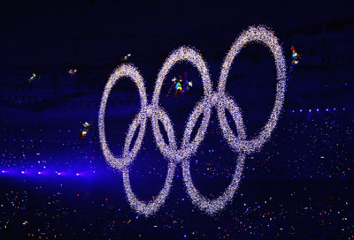
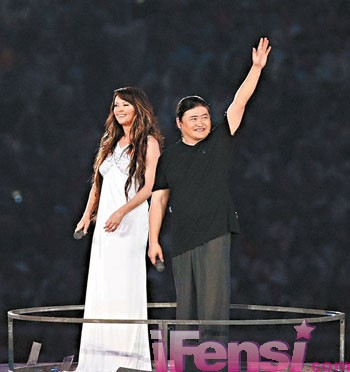

中国没有拿到首金,但是运动员已经尽力了,我们不要给他们太大的压力,重要的是让运动员们享受奥运比赛的过程,不管结果怎样,我们都要为他们加油喝彩,为奥运赛场上每一个运动员加油,因为他们每一人都很棒...
奥运开幕第6天,还是守在电视机前关注奥运,一开始我会非常激动和紧张,担心我们运动员会有压力啊,可能会失误啊什么的,现在才第6天,我已经不紧张了,我们已经拿了15块金牌,我们中国人实在太厉害了,接下的日子中国的金牌会越来越多,哈哈哈...
我们向世界说;welcome to beijing ,我们向世界说;we are ready,是啊,我们准备好了.
当李宁将奥运圣火点燃时,中国人民沸腾了,世界人民沸腾了,从1913年的只有一名运动员到现在的在自己的家门口开奥运了`,这个梦想终于实现拉.7年后的今天,奥运会开幕了,这是我们中国开的第一次奥运会,这是我们期待的一天,百年的梦想终于实现了...
开幕式上五环升起时的音乐是我的专辑的制作人常石磊写的,还有刘欢和莎拉布莱曼一起唱的那首<你和我>也他编曲的,那是我最激动的时刻．．．
